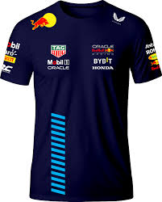

Max Verstappen
Max Emilian Verstappen (Hasselt,[4] 30 de setembro de 1997) é um automobilista neerlandês. Ele é piloto de Fórmula 1 desde 2015, tendo feito sua estreia pela equipe Toro Rosso. É quatro vezes campeão da Fórmula 1 em 2021, 2022, 2023 e 2024[5][6][7][8] e terminou em terceiro lugar em 2019 e 2020 com a Red Bull Racing, equipe pela qual corre desde 2016.[9][10] É o piloto mais jovem a vencer um Grande Prêmio (18 anos 7 meses e 15 dias no GP da Espanha de 2016),[11] o mais jovem a alcançar o recorde de voltas em uma sessão, este foi o terceiro treino livre no Autódromo Hermanos Rodríguez (México) em 28 de outubro de 2017, e o piloto mais jovem a competir na história desta categoria, como ele fez sua estreia com 17 anos e 166 dias no GP da Austrália de 2015 para a equipe Scuderia Toro Rosso,[12] assim como o primeiro piloto de nacionalidade neerlandesa a subir para o lugar mais alto do pódio da F1.[11] No GP da Áustria de 2021, após 128 grandes prêmios, 50 pódios e 15 vitórias, Max Verstappen alcançou seu primeiro Grand Chelem aos 23 anos, 9 meses e 4 dias, sendo assim o piloto mais jovem a conquistá-lo na história da categoria mais alta do automobilismo.[13] Ele foi o primeiro vencedor na história da F1 de uma corrida de sprint, qualificando-se para o Grande Prêmio da Grã-Bretanha de 2021.[14] Naquele ano, ele foi proclamado campeão de Fórmula 1 após vencer no Grande Prêmio de Abu Dhabi, derrotando o atual campeão Lewis Hamilton na última volta, com quem havia alcançado a última corrida empatada em pontos. Desta forma, ele também se tornou o primeiro piloto neerlandês a obter o título.[15] Nos anos seguintes, em 2022, 2023 e 2024, Verstappen conquistou mais três títulos de forma dominante.[16] Em 2024, conquistou o título com 2 corridas de antecedência após batalhar com Lando Norris durante a maior parte da temporada e enfrentar seu maior jejum de vitórias desde que se tornou campeão mundial (10 corridas sem vencer).[17] Infância e família Nascido na Bélgica, Max Verstappen vem de uma família de pilotos: seu pai, Jos Verstappen, disputou oito temporadas de Fórmula 1 pelas equipes Benetton, Simtek, Footwork, Tyrrell, Stewart, Arrows e Minardi; sua mãe, Sophie-Marie Kumpen, correu de kart e na Formido Swift Cup; Paul Kumpen, seu avô, competiu em provas de Endurance,[18] e seu tio Anthony Kunpen participou de corridas do FIA GT e nas 24 Horas de Le Mans. Verstappen tem uma irmã mais nova e dois meios-irmãos mais novos, filhos de seu pai.[19] Red Bull 2016-20: Estreia e primeiras vitórias Max Verstappen comemorando sua primeira vitória na Fórmula 1 no GP da Espanha de 2016 Em 5 de maio de 2016, dias após o Grande Prêmio da Rússia, a equipe Red Bull promoveu a troca do então titular Daniil Kvyat pelo jovem Max Verstappen.[34] Após o anúncio, Max revelou que ficou muito ansioso ao estrear na RBR, a ponto de ficar três noites sem dormir.[35] A mudança de equipe fez com que seu pai, Jos Verstappen, também anunciasse que se afastaria da gerência da carreira de Max por acreditar que este alcançou o lugar almejado.[36] Na sua primeira corrida na equipe, no GP da Espanha de 2016, obteve sua melhor posição de largada — quarto lugar.[37] Na corrida assumiu o segundo posto após a colisão entre os líderes Lewis Hamilton e Nico Rosberg. Permaneceu mais tempo na pista antes de sua segunda troca de pneus e assumiu a liderança na volta 44 após a troca de pneus de Daniel Ricciardo. Manteve-se na liderança mesmo sob pressão de Kimi Räikkönen da Ferrari até a vitória. Com este resultado, alcançou quatro marcas históricas na Fórmula 1: o mais jovem piloto a liderar uma prova, subir ao pódio e vencer uma corrida; por extensão, tornou-se também o primeiro neerlandês (holandês) a vencer na Fórmula 1.[38] Seu recorde de mais jovem a liderar uma volta foi mantido até 6 de abril de 2025, quando Andrea Kimi Antonelli, que tinha 18 anos, 7 meses e 12 dias (três dias a menos do que Verstappen), liderou voltas no GP do Japão de 2025.[39] No GP do Brasil de 2016, Verstappen largou em quarto, mas por conta de um erro na escolha de pneus, despencou para 14º. Porém, o neerlandês apresentou um grande desempenho durante a chuva, promovendo várias ultrapassagens até alcançar o pódio, com seu desempenho levando Gerhard Berger a compará-lo com Ayrton Senna e Michael Schumacher.[40] Nessa corrida, Verstappen também fez a volta mais rápida, e como na época, ele contava com 19 anos e 44 dias, ele se tornou o mais jovem a fazer a melhor volta numa corrida de F1, superando Nico Rosberg, que fez a volta mais rápida do GP do Barém de 2006 aos 20 anos, 8 meses e 13 dias.[41] Esse recorde de Verstappen perdurou até 2025, quando Kimi Antonelli, que tinha 18 anos e 226 dias, anotou a melhor volta no GP do Japão daquele ano.[42] Max Verstappen em 2017 Verstappen seguiu evoluindo em 2017, ano em que venceu mais duas vezes: na Malásia[43] e no México, onde também foi o mais jovem a liderar uma corrida inteira,[44] e ainda fez um terceiro lugar na China e um segundo lugar no Japão. Ele teria feito mais um pódio nos EUA, mas acabou punido por corte de curvas e perdendo seu lugar no pódio, com o momento sendo exibido diante das câmeras, o que enfureceu Verstappen, que chegou a chamar o comissário que o puniu de "idiota" e a pedir que os fãs não fossem à corrida no ano seguinte.[45] No geral, a temporada foi difícil para Max, pois a instabilidade de seu carro e seus acidentes o fizeram abandonar sete das vinte provas daquela temporada, e assim, Verstappen terminou atrás de seu companheiro de equipe, Daniel Ricciardo, que ficou uma posição acima dele no campeonato e fez 32 pontos a mais.[46] Seu início de temporada em 2018 foi ainda mais difícil, com o neerlandês se envolvendo em diversos acidentes, como o de Azerbaijão, no qual ele e seu companheiro Daniel Ricciardo colidiram e abandonaram a prova,[47] e o da classificação em Mônaco, no qual ele foi bastante criticado por sua pilotagem.[48] Ele também se envolveu em uma polêmica no GP do Brasil, onde ele agrediu seu velho rival da base, Esteban Ocon, por este ter feito uma manobra que atrapalhou o neerlandês e o impediu de vencer a corrida. Tal atitude lhe rendeu uma punição de prestação de serviços comunitários.[49] Mesmo assim, Verstappen fez uma boa temporada de recuperação em 2018, acumulando onze pódios, vencendo pela primeira vez na Áustria[50] e pela segunda vez no México,[51] encerrando o ano em quarto no campeonato de pilotos e superando Ricciardo, que deixou a equipe no final da temporada, por 79 pontos.[52] Verstappen pilotando o RB15 no Grande Prêmio da Áustria de 2019 2019 testemunhou um avanço ainda maior do neerlandês, que teve dois companheiros durante a temporada: Pierre Gasly e Alexander Albon, promovidos da Toro Rosso como ele.[53] Foi uma temporada especial para Max, que no dia 3 de agosto, conquistou sua primeira pole position no GP da Hungria de 2019, se tornando o primeiro piloto da Holanda a cravar uma pole e o centésimo piloto a largar na posição de honra de um grid. Foi também a primeira pole da Honda como fornecedora de motores desde o GP da Austrália de 2006, com Jenson Button.[54] Verstappen venceu três vezes em 2019: na Áustria, na Alemanha e no Brasil, onde anotou sua segunda pole,[55] e fez mais seis pódios, ficando em terceiro no campeonato, sendo esta a sua melhor posição na carreira até aquele momento.[56] 2020 viu um amadurecimento de Verstappen, que obteve 11 pódios nas 12 corridas que completou, porém, as quebras impediram que ele disputasse o título.[57] Uma vitória muito comemorada foi a do GP do 70º aniversário em Silverstone, que o piloto da Red Bull conquistou após largar em quarto e escolher bem seus pneus.[58] Na última etapa, em Abu Dhabi, o neerlandês faturou a sua única pole da temporada e encerrou o ano com vitória, mas não foi o suficiente para tirar o vice-campeonato das mãos do piloto Valtteri Bottas, da Mercedes.[59]
Yuki Tsunoda
Yuki Tsunoda (em japonês: 角田 裕毅; Kanagawa, 11 de maio de 2000) é um automobilista japonês que atualmente compete na Fórmula 1 pela equipe Red Bull Racing.[2] Estreou na categoria em 2021 pela AlphaTauri, seguindo na equipe após esta ser renomeada para Racing Bulls. Ele foi campeão do Campeonato Japonês de Fórmula 4 em 2018 e é membro da Red Bull Junior Team[3] e do Honda Formula Dream Project. Carreira Kart Começou a carreira em 2005, aos 4 anos, quando entrou no kart. Em 2010 participou da classe Junior do JAF All Japan Kart Championship. Em 2013, ele ganhou um campeonato regional de kart. Ele ficou em segundo lugar no JAF All Japan Kart Championship 2015.[4] Fórmula 4 Japonesa Tsunoda fez sua estreia nos monopostos em 2016, quando participou do penúltimo fim de semana do Campeonato Japonês de Fórmula 4 em Suzuka, onde correu pela Sutekina Racing Team. Com um pódio e mais um quarto lugar nas corridas, ele ficou em décimo sexto lugar no campeonato, com 30 pontos. Ele correu neste campeonato novamente em 2017 pela equipe Honda Formula Dream Project (Motopark Academy). Venceu três corridas, uma em Okayama, outra em Fuji e a última em Suzuka. Com 173 pontos, terminou em terceiro, atrás de Ritomo Miyata e Ukyo Sasahara. Em 2018 Tsunoda seguiu na Fórmula 4 japonesa. No início da temporada, ele venceu cinco corridas consecutivas nos circuitos de Okayama, Fuji (duas vezes) e Suzuka (duas vezes). Mais tarde, ele conseguiu mais duas vitórias no Sportsland SUGO e no Twin Ring Motegi. No entanto, ele ficou várias etapas sem pontuar, assim, só na última corrida da temporada, em Motegi, é que se sagrou campeão após uma longa batalha com o seu companheiro de equipe Teppei Natori. Tsunoda terminou a temporada com 245 pontos. Fórmula 3 da FIA No final de 2018, Tsunoda foi contratado pela equipe Jenzer Motorsport para a disputa da temporada inaugural do Campeonato de Fórmula 3 da FIA, tendo Andreas Estner como companheiro regular.[5][6] Teve três pódios, incluindo uma vitória em Monza, e fechou o ano em nono, com 67 pontos. Fórmula 2 Em 10 de janeiro de 2020, foi anunciado que Tsunoda disputaria o Campeonato de Fórmula 2 da FIA de 2020 com a equipe Carlin, ao lado do indiano Jehan Daruvala.[7] Tsunoda fez quatro poles e sete pódios, incluindo três vitórias, e terminou o ano em terceiro no campeonato, somando 200 pontos, apenas um a menos do que o vice-campeão Callum Ilott, e quinze atrás do campeão Mick Schumacher. Mesmo assim, com esse resultado, Yuki conseguiu garantir a superlicença,[8] e ainda recebeu o prêmio de melhor estreante da temporada.[9] Fórmula 1 AphaTauri (2021–2023) Em 16 de dezembro de 2020, foi anunciado que Tsunoda havia se juntado à recém-criada equipe de Fórmula 1 AlphaTauri para a disputa da temporada de 2021,[10] sendo novo companheiro de Pierre Gasly e ainda se tornando o primeiro piloto da Formula 1 a nascer a partir dos anos 2000. Na sua corrida de estreia, em 28 de março de 2021, no Grande Prêmio do Barém, Tsunoda marcou seus primeiros dois pontos na Fórmula 1.[11] Nesse ano, o japonês foi irregular, embora tenha aparecido sete vezes na zona de pontos, com seu destaque sendo em Abu Dhabi, onde ele conseguiu um quarto lugar, sua melhor posição até o momento.[12] Tsunoda fechou o ano em décimo quarto, com 32 pontos, ficando cinco posições abaixo de Gasly, que fez mais que o triplo da sua pontuação.[13] Em 2023, Tsunoda viu Pierre Gasly deixar o time, e ele teve três companheiros de equipes diferentes nesse mesmo ano: Nyck de Vries, que foi dispensado após apenas 10 corridas, Daniel Ricciardo, que retornava ao time após dez anos (ele foi piloto na época da Toro Rosso entre 2012 e 2013), e Liam Lawson, que substituiu Ricciardo em quatro corridas quando o australiano sofreu uma fratura na mão. Assim, Tsunoda acabou sendo alçado ao posto de líder, conquistando a maior parte dos pontos da equipe.[18] No GP dos EUA , Tsunoda fez a sua primeira volta mais rápida na categoria, e com as desclassificações de Lewis Hamilton e Charles Leclerc, o japonês encerrou a corrida em oitavo lugar.[19] Ele fechou o ano em décimo quarto, com dezessete pontos.[20] Racing Bulls/RB (2024–2025) Tsunoda pilotando o VCARB 01 na China em 2024 Tsunoda permaneceu com a equipe, que foi renomeada para Visa Cash App RB, para a disputa da temporada de 2024.[21] Já na primeira corrida, o japonês protagonizou um incidente com seu companheiro de equipe, Daniel Ricciardo, quando demonstrou insatisfação por receber uma ordem para trocar de posição com o australiano. Depois de reclamar bastante, o japonês avançou na direção de Ricciardo no final da corrida, fez um "brake test" e depois ultrapassou, levando perigo ao outro bólido da RB.[22] Superado o incidente, o japonês se concentrou nas corridas, e vem conseguindo seu melhor desempenho desde a sua estreia. Tsunoda bateu Ricciardo constantemente e conseguiu importantes pontos para sua equipe, com direito a um décimo lugar em seu GP local, no Japão, feito que não se via desde 2012, com Kamui Kobayashi.[23] A partir do GP dos EUA, Tsunoda voltou a ter o neozelandês Liam Lawson como companheiro de equipe. Apesar de ter sido superado por ele nas etapas iniciais, Tsunoda reagiu e conseguiu somar mais pontos do que Lawson nas seis corridas em que ambos competiram juntos na RB. Tsunoda somou 30 pontos durante a temporada, ficando na 12ª colocação.[24][25] No dia 8 de junho de 2024, a Racing Bulls anunciou a renovação do contrato de Tsunoda até o final da temporada de 2025.[26] E ao final do ano, o japonês participou dos testes pós-temporada com a Red Bull em Yas Marina, recebendo elogios da equipe por seu feedback técnico.[27] Seu parceiro para esta temporada foi o vice-campeão de Fórmula 2 de 2024, Isack Hadjar. A primeira rodada do Grande Prêmio da Austrália começou forte com o quinto lugar durante a qualificação.[28] Apesar de correr em sexto na maior parte da corrida, uma troca tardia para pneus intermediários o fez despencar para a 12ª colocação.[29] Tsunoda marcou pontos no fim de semana seguinte durante o Grande Prêmio da China ao terminar em sexto durante a corrida curta. Depois de outra largada entre os 10 primeiros,[30] Tsunoda estava pronto para mais pontos na corrida, mas uma falha na asa dianteira o forçou a fazer uma parada extra, terminando a corrida em último lugar.[31] Suas fortes performances no início da temporada durante essas duas corridas abriram discussões para promover Tsunoda como um substituto de Liam Lawson na equipe-mãe.[32] Red Bull (2025–presente) Tsunoda guiando o RB21 durante os treinos do GP do Japão de 2025 Em 27 de março de 2025, a Red Bull confirmou que Tsunoda substituiria Liam Lawson a partir do Grande Prêmio do Japão, com Lawson retornando para a Racing Bulls. Com isso, Tsunoda se tornou o novo parceiro de Max Verstappen.[2] O japonês foi décimo segundo colocado em Suzuka,[33] e marcou seus primeiros pontos com a equipe na etapa seguinte, no Barém, com um nono lugar.[34]
Camisa
Camisa da redbull
R$ 200,00